Sequence Data
In this notebook, we explore the sequence data collected for modelling TCR:pMHC interactions.
[1]:
import itertools
import re
import warnings
import logomaker
import matplotlib.pyplot as plt
import networkx as nx
import numpy as np
import openchord
import pandas as pd
import plotly.graph_objects as go
import seaborn as sns
import upsetplot
from matplotlib.patches import Patch
from pyxdameraulevenshtein import damerau_levenshtein_distance
Data selection pipeline
[2]:
with open('../data/logs/collate_sequence_data.log', 'r') as fh:
logs = fh.read()
lines = logs.split('\n')
[3]:
count_lines = [
(
i,
(
re.search(r'INFO: Number of (.*?): (\d+)$', line)[1],
int(re.search(r'INFO: Number of (.*?): (\d+)$', line)[2]),
),
)
for i, line in enumerate(lines)
if re.search(r'INFO: (.*?): (\d+)$', line)
]
steps = [lines[i - 1].split('INFO: ')[-1] for i, _ in count_lines]
[4]:
chunks = []
current_chunk = None
for i, line in enumerate(steps):
if line.startswith(('Processing', 'Collating')):
if current_chunk is None:
current_chunk = []
else:
chunks.append(current_chunk)
current_chunk = []
current_chunk.append((i, line))
chunks.append(current_chunk)
sources = []
targets = []
counts = []
for chunk in chunks[:-1]:
for (idx1, _), (idx2, _) in itertools.pairwise(chunk):
source, prev_count = count_lines[idx1][1]
target, count = count_lines[idx2][1]
sources.append(source)
targets.append(target)
counts.append(count)
sources.append(source)
targets.append('reject')
counts.append(prev_count - count)
source, count = count_lines[chunk[-1][0]][1]
target, _ = count_lines[chunks[-1][0][0]][1]
sources.append(source)
targets.append(target)
counts.append(count)
for (idx1, _), (idx2, _) in itertools.pairwise(chunks[-1]):
source, prev_count = count_lines[idx1][1]
target, count = count_lines[idx2][1]
sources.append(source)
targets.append(target)
counts.append(count)
sources.append(source)
targets.append('reject')
counts.append(prev_count - count)
selection_df = pd.DataFrame(
{
'source': sources,
'target': targets,
'count': counts,
}
)
[5]:
plot_df = selection_df.copy()
unique_source_target = list(np.unique(plot_df[['source', 'target']].to_numpy().flatten()))
mapping_dict = {k: v for v, k in enumerate(unique_source_target)}
plot_df['source'] = plot_df['source'].map(mapping_dict)
plot_df['target'] = plot_df['target'].map(mapping_dict)
fig = go.Figure(
data=[
go.Sankey(
node={
'pad': 15,
'thickness': 20,
'line': {'color': 'black', 'width': 0.5},
'label': unique_source_target,
},
link={
'source': plot_df['source'],
'target': plot_df['target'],
'value': plot_df['count'],
},
)
]
)
fig.update_layout(title_text='Sankey diagram of sequence data curation', font_size=10, width=1000, height=600)
fig.show()
Data type cannot be displayed: application/vnd.plotly.v1+json
Data visualisations
[6]:
sequence_data = pd.read_csv('../data/interim/sequences.csv')
Overlap of data from the different data sources
[7]:
sequence_data['source'] = sequence_data['source'].str.split(';').apply(set)
[ ]:
with warnings.catch_warnings():
warnings.simplefilter(action='ignore', category=FutureWarning)
upsetplot.UpSet(upsetplot.from_memberships(sequence_data['source']), subset_size='count').plot()
plt.show()
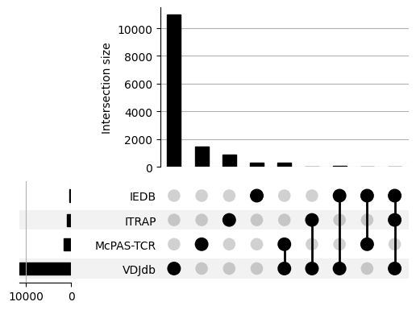
Species
[ ]:
sequence_data['species'].value_counts().plot.pie()
plt.ylabel('')
plt.show()
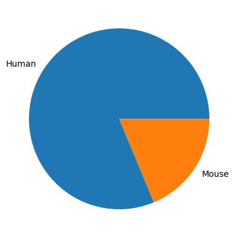
TCRs
[10]:
sequence_data['collated_cdr_sequences'] = sequence_data.filter(regex='cdr[1-3]_alpha|beta').apply(
'-'.join, axis='columns'
)
[11]:
print('There are', len(sequence_data['collated_cdr_sequences'].unique()), 'unique TCRs')
print(len(sequence_data['cdr1_alpha'].unique()), 'unique CDR1as')
print(len(sequence_data['cdr2_alpha'].unique()), 'unique CDR2as')
print(len(sequence_data['cdr3_alpha'].unique()), 'unique CDR3as')
print(len(sequence_data['cdr1_beta'].unique()), 'unique CDR1bs')
print(len(sequence_data['cdr2_beta'].unique()), 'unique CDR2bs')
print(len(sequence_data['cdr3_beta'].unique()), 'unique CDR3bs')
There are 12295 unique TCRs
91 unique CDR1as
75 unique CDR2as
9020 unique CDR3as
55 unique CDR1bs
65 unique CDR2bs
9890 unique CDR3bs
CDR Lengths
[12]:
cdr_lengths = sequence_data.filter(regex='cdr[1-3]_(alpha|beta)').map(len)
cdr_lengths = cdr_lengths.melt(value_vars=cdr_lengths.columns, value_name='length', var_name='cdr_type')
cdr_lengths['chain_type'] = cdr_lengths['cdr_type'].map(lambda cdr_type: cdr_type.split('_')[-1])
cdr_lengths['cdr_num'] = cdr_lengths['cdr_type'].map(lambda cdr_type: cdr_type.split('_')[0][-1]).apply(int)
[13]:
titles = {
(chain_type, cdr_num): f'CDR{cdr_num}$\\{chain_type}$'
for chain_type, cdr_num in cdr_lengths[['chain_type', 'cdr_num']].apply(tuple, axis='columns').unique()
}
titles
[13]:
{('alpha', 1): 'CDR1$\\alpha$',
('alpha', 2): 'CDR2$\\alpha$',
('alpha', 3): 'CDR3$\\alpha$',
('beta', 1): 'CDR1$\\beta$',
('beta', 2): 'CDR2$\\beta$',
('beta', 3): 'CDR3$\\beta$'}
[ ]:
grid = sns.displot(cdr_lengths, row='chain_type', col='cdr_num', x='length')
titles = {
(chain_type, cdr_num): f'CDR{cdr_num}$\\{chain_type}$'
for chain_type, cdr_num in cdr_lengths[['chain_type', 'cdr_num']].apply(tuple, axis='columns').unique()
}
for (chain_type, cdr_num), ax in grid.axes_dict.items():
ax.tick_params(axis='both', labelsize=14)
ax.set_title(titles[(chain_type, cdr_num)], fontsize=22, y=0.9)
grid.set_axis_labels('', '')
grid.figure.suptitle('Length of CDR', x=0.5, y=0.02, fontsize=18)
grid.figure.text(-0.01, 0.5, 'Frequency', va='center', fontsize=18, rotation=90)
plt.show()
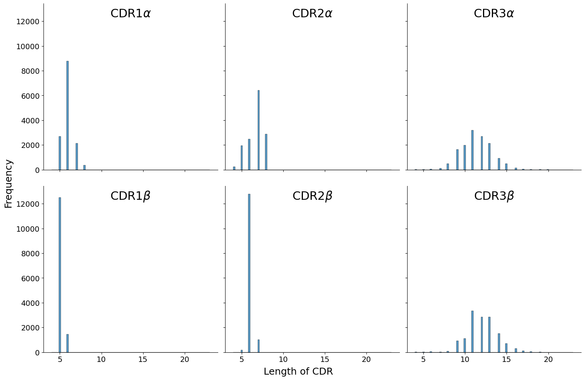
[15]:
cdr_lengths.groupby(['chain_type', 'cdr_num'])['length'].describe()
[15]:
| count | mean | std | min | 25% | 50% | 75% | max | ||
|---|---|---|---|---|---|---|---|---|---|
| chain_type | cdr_num | ||||||||
| alpha | 1 | 13962.0 | 6.010887 | 0.669532 | 5.0 | 6.0 | 6.0 | 6.0 | 8.0 |
| 2 | 13962.0 | 6.698109 | 1.002844 | 4.0 | 6.0 | 7.0 | 7.0 | 8.0 | |
| 3 | 13962.0 | 11.418851 | 1.919230 | 4.0 | 10.0 | 11.0 | 13.0 | 21.0 | |
| beta | 1 | 13962.0 | 5.103352 | 0.304429 | 5.0 | 5.0 | 5.0 | 5.0 | 6.0 |
| 2 | 13962.0 | 6.058874 | 0.284701 | 5.0 | 6.0 | 6.0 | 6.0 | 7.0 | |
| 3 | 13962.0 | 12.063458 | 1.855996 | 4.0 | 11.0 | 12.0 | 13.0 | 23.0 |
Gene usage and pairing
[16]:
gene_codes = sequence_data[['v_alpha', 'j_alpha', 'v_beta', 'j_beta']].map(lambda code: code.split(';'))
gene_codes = gene_codes.explode('v_alpha').explode('j_alpha').explode('v_beta').explode('j_beta')
[17]:
print('There are', len(gene_codes), 'unique gene combinations of the TCRs')
There are 18513 unique gene combinations of the TCRs
[18]:
gene_codes = gene_codes.map(lambda code: code.split('*01')[0])
[19]:
selection_df = pd.concat(
[
gene_codes[[source_gene_type, target_gene_type]]
.value_counts()
.reset_index()
.rename({source_gene_type: 'source', target_gene_type: 'target'}, axis='columns')
for source_gene_type, target_gene_type in itertools.pairwise(gene_codes.columns)
]
)
[20]:
plot_df = selection_df.copy()
unique_source_target = list(np.unique(plot_df[['source', 'target']].to_numpy().flatten()))
mapping_dict = {k: v for v, k in enumerate(unique_source_target)}
plot_df['source'] = plot_df['source'].map(mapping_dict)
plot_df['target'] = plot_df['target'].map(mapping_dict)
fig = go.Figure(
data=[
go.Sankey(
node={
'pad': 20,
'thickness': 30,
'line': {'color': 'black', 'width': 0.5},
'label': unique_source_target,
},
link={
'source': plot_df['source'],
'target': plot_df['target'],
'value': plot_df['count'],
},
)
]
)
fig.update_layout(title_text='Sankey diagram of TCR gene usage', font_size=10, width=1400, height=900)
fig.show()
Data type cannot be displayed: application/vnd.plotly.v1+json
[ ]:
print('alpha-chain gene pairings')
counts = gene_codes.value_counts(['v_alpha', 'j_alpha'])
labels = sorted(
np.concatenate([gene_codes['v_alpha'].dropna().unique(), gene_codes['j_alpha'].dropna().unique()]).tolist()
)
num_labels = len(labels)
adjacency_matrix = np.zeros((num_labels, num_labels), dtype=int)
for i in range(num_labels):
for j in range(num_labels):
try:
adjacency_matrix[i, j] = counts[labels[i]][labels[j]]
except KeyError:
adjacency_matrix[i, j] = 0
adjacency_matrix = np.maximum(adjacency_matrix, adjacency_matrix.transpose())
fig = openchord.Chord(adjacency_matrix, labels)
fig.colormap = list(plt.rcParams['axes.prop_cycle'].by_key()['color'])
fig.radius = 300
fig.padding = 150
fig.font_size = 12
fig.show()
alpha-chain gene pairings
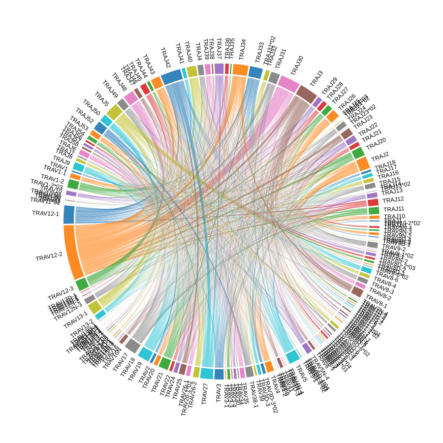
[ ]:
print('beta-chain gene pairings')
counts = gene_codes.value_counts(['v_beta', 'j_beta'])
labels = sorted(
np.concatenate([gene_codes['v_beta'].dropna().unique(), gene_codes['j_beta'].dropna().unique()]).tolist()
)
num_labels = len(labels)
adjacency_matrix = np.zeros((num_labels, num_labels), dtype=int)
for i in range(num_labels):
for j in range(num_labels):
try:
adjacency_matrix[i, j] = counts[labels[i]][labels[j]]
except KeyError:
adjacency_matrix[i, j] = 0
adjacency_matrix = np.maximum(adjacency_matrix, adjacency_matrix.transpose())
fig = openchord.Chord(adjacency_matrix, labels)
fig.colormap = list(plt.rcParams['axes.prop_cycle'].by_key()['color'])
fig.radius = 300
fig.padding = 150
fig.font_size = 12
fig.show()
beta-chain gene pairings
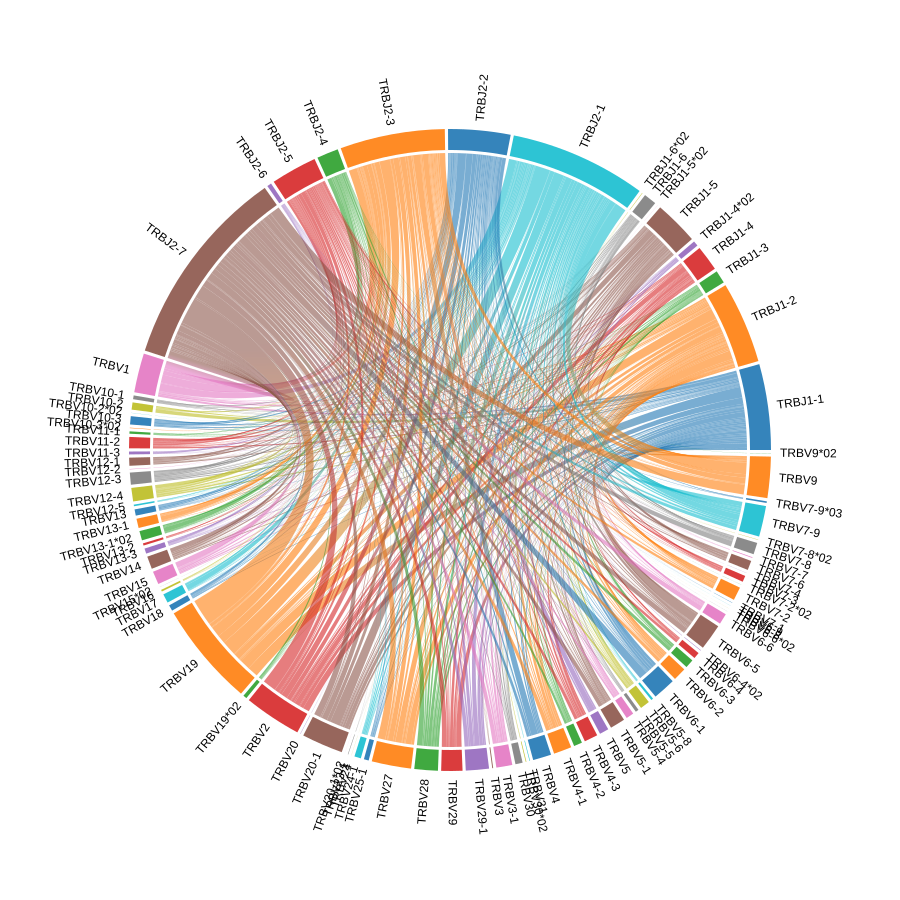
[ ]:
plt.figure(figsize=(25, 25))
plt.title('V-gene pairings between chains', fontsize=32)
sns.heatmap(
gene_codes.value_counts(['v_alpha', 'v_beta'], normalize=True)
.to_frame()
.reset_index()
.pivot_table(index='v_alpha', columns='v_beta', values='proportion')
.fillna(0)
)
plt.show()
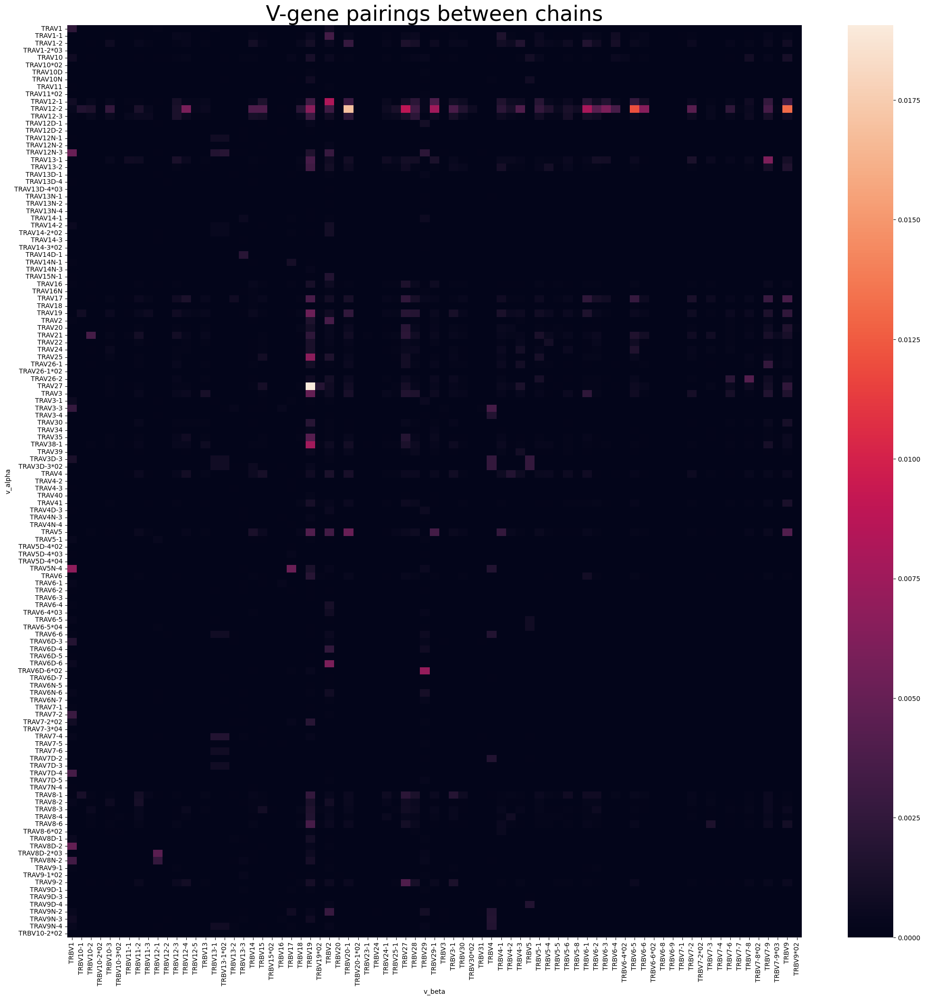
Peptides
[24]:
print('There are', len(sequence_data['peptide'].unique()), 'unique peptides')
There are 1033 unique peptides
[25]:
sequence_data['peptide_length'] = sequence_data['peptide'].str.len()
[ ]:
grid = sns.displot(
sequence_data,
x='peptide_length',
col='mhc_type',
stat='probability',
common_norm=False,
)
for mhc_type, ax in grid.axes_dict.items():
ax.tick_params(axis='both', labelsize=14)
ax.set_title(mhc_type, fontsize=22, y=0.9)
grid.set_axis_labels('', '')
grid.figure.suptitle('Length of Peptide', x=0.5, y=0.02, fontsize=18)
grid.figure.text(-0.01, 0.5, 'Proportion', va='center', fontsize=18, rotation=90)
plt.show()
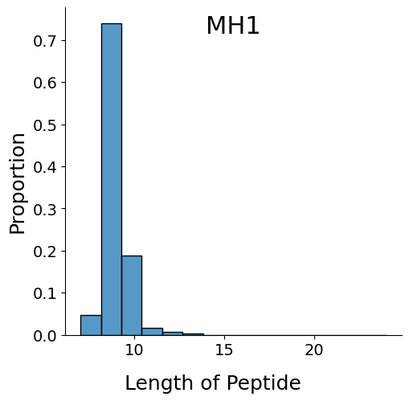
[27]:
sequence_data.groupby('mhc_type')['peptide_length'].describe()
[27]:
| count | mean | std | min | 25% | 50% | 75% | max | |
|---|---|---|---|---|---|---|---|---|
| mhc_type | ||||||||
| MH1 | 13962.0 | 9.20434 | 0.616141 | 7.0 | 9.0 | 9.0 | 9.0 | 24.0 |
[28]:
peptide_sequences = sequence_data['peptide'].unique()
distance_matrix = np.zeros((peptide_sequences.shape[0], peptide_sequences.shape[0]), dtype=int)
for i in range(peptide_sequences.shape[0]):
for j in range(i + 1, peptide_sequences.shape[0]):
distance_matrix[i, j] = damerau_levenshtein_distance(peptide_sequences[i], peptide_sequences[j])
distance_matrix = np.maximum(distance_matrix, distance_matrix.T)
print(
f'The average levenshtein distance between all peptide sequences is {np.average(distance_matrix):.2f} edits',
f'with an standard deviation of {np.std(distance_matrix):.2f} edits.',
)
The average levenshtein distance between all peptide sequences is 8.43 edits with an standard deviation of 1.31 edits.
[29]:
CUTOFF_PERCENT = 70
sequence_lengths = np.array([len(seq) for seq in peptide_sequences])
grid1, grid2 = np.meshgrid(sequence_lengths, sequence_lengths)
max_lengths = np.maximum(grid1, grid2)
sequence_percent_identities = ((max_lengths - distance_matrix) / max_lengths) * 100
similar_peptides = sequence_percent_identities > CUTOFF_PERCENT
[30]:
G = nx.Graph()
G.add_nodes_from(range(peptide_sequences.shape[0]))
for i in range(1, peptide_sequences.shape[0]):
for j in range(i + 1, peptide_sequences.shape[0]):
if similar_peptides[i, j]:
G.add_edge(i, j, weight=sequence_percent_identities[i, j] / 100)
[ ]:
plt.figure(figsize=(20, 15))
plt.title('Peptides grouped at 70% sequence identity', fontsize=24)
nx.draw(
G,
node_size=25,
pos=nx.drawing.nx_agraph.graphviz_layout(G, prog='neato'),
)
plt.show()
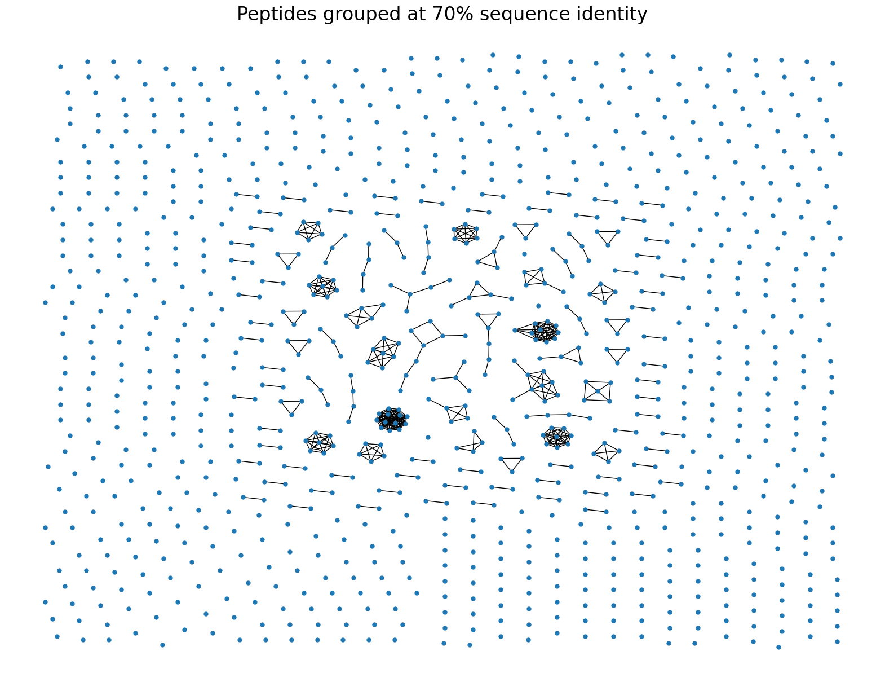
MHCs
[ ]:
sequence_data['mhc_type'].value_counts().plot.pie()
plt.ylabel('')
plt.show()
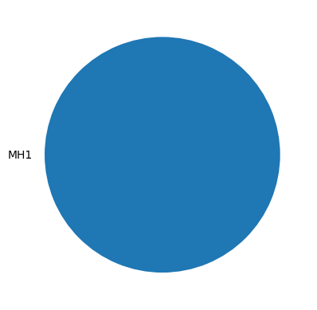
[ ]:
sequence_data.query("mhc_type == 'MH1'")['mhc1'].value_counts().plot.bar(figsize=(12, 4))
plt.ylabel('Count', fontsize=18)
plt.xlabel('MHC Allele Name', fontsize=18)
plt.show()
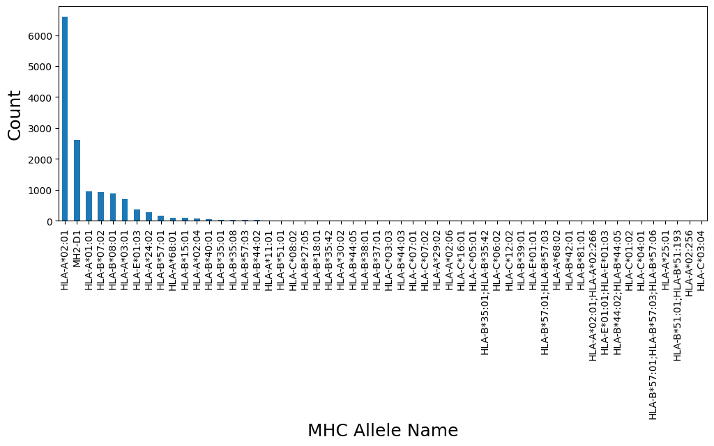
[ ]:
probs = logomaker.alignment_to_matrix(sequence_data['mhc_pseudo'], to_type='information')
logomaker.Logo(probs, color_scheme='chemistry')
plt.title('MHC Pseudo Sequences')
plt.ylabel('Bits')
plt.xticks([])
plt.show()
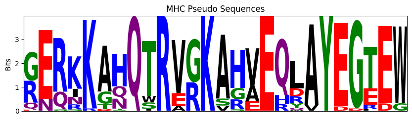
[ ]:
probs = logomaker.alignment_to_matrix(
sequence_data.drop_duplicates(['mhc1', 'mhc2'])['mhc_pseudo'],
to_type='information',
)
logomaker.Logo(probs, color_scheme='chemistry')
plt.title('MHC Pseudo Sequences (Normalised by Allele)')
plt.ylabel('Bits')
plt.xticks([])
plt.show()
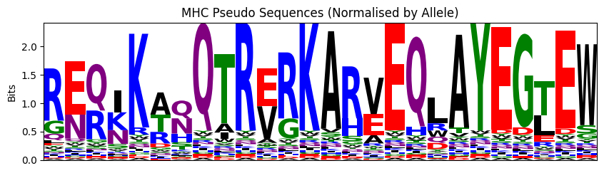
Interactions between TCRs and pMHCs
[36]:
sequence_data['pmhc'] = (
sequence_data[['peptide', 'mhc1', 'mhc2']].replace('B2M', '').apply('-'.join, axis='columns').str.rstrip('-')
)
[37]:
sequence_data.groupby('collated_cdr_sequences').size().describe()
[37]:
count 12295.000000
mean 1.135584
std 0.607353
min 1.000000
25% 1.000000
50% 1.000000
75% 1.000000
max 38.000000
dtype: float64
[38]:
sequence_data.groupby('peptide').size().describe()
[38]:
count 1033.000000
mean 13.515973
std 90.529515
min 1.000000
25% 1.000000
50% 2.000000
75% 3.000000
max 2107.000000
dtype: float64
[ ]:
graph = nx.Graph()
graph.add_nodes_from([(tcr, {'color': 'tab:blue'}) for tcr in sequence_data['collated_cdr_sequences'].unique()])
graph.add_nodes_from([(pmhc, {'color': 'tab:orange'}) for pmhc in sequence_data['pmhc'].unique()])
graph.add_edges_from(sequence_data[['collated_cdr_sequences', 'pmhc']].apply(tuple, axis=1).tolist())
print(graph)
plt.figure(figsize=(20, 15))
with warnings.catch_warnings():
warnings.simplefilter(action='ignore', category=RuntimeWarning)
nx.draw(
graph,
node_size=25,
node_color=[graph.nodes[node]['color'] for node in graph.nodes()],
pos=nx.drawing.nx_agraph.graphviz_layout(graph, prog='dot', args='-Granksep=5 -Gnodesep=0.8'),
)
legend_elements = [
Patch(facecolor='tab:blue', label='TCR'),
Patch(facecolor='tab:orange', label='pMHC'),
]
plt.legend(handles=legend_elements, loc='upper right', fontsize=20)
plt.show()
Graph with 13360 nodes and 12655 edges
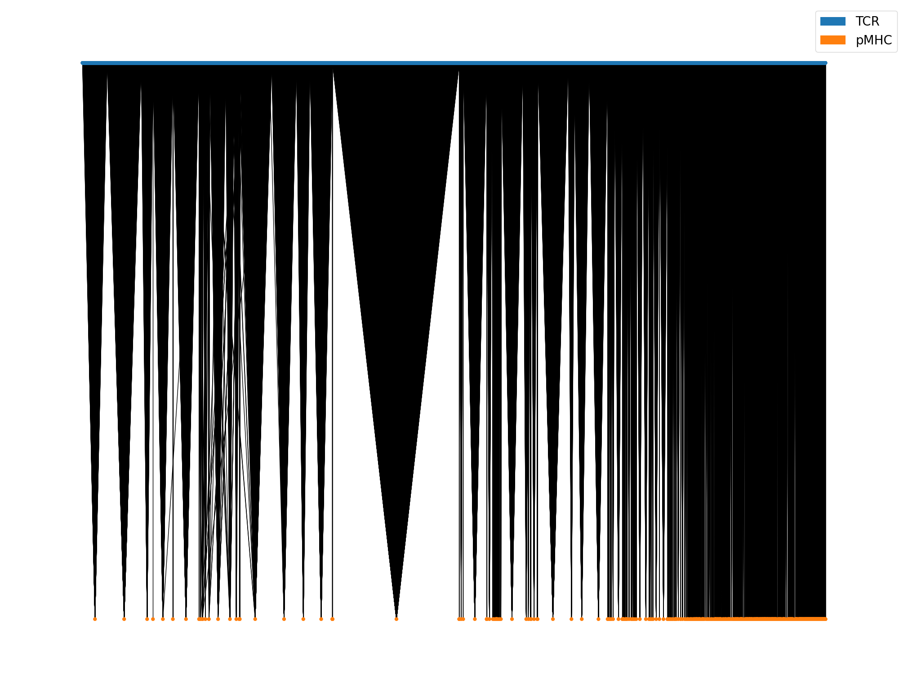
There is a strong many-to-1 bias for the TCR:pMHC interactions but there are a few examples of TCRs binding different peptides.